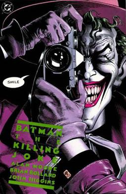

Historia DC comics
El origen de los comics se remonta a miles de años, desde que el ser humano tuvo la necesidad de dibujar para poder explicar una historia, aventura, acontecimiento o leyenda. Se considera a Thomas Rowlandson el inventor del comic en el año 1809.
Superman
El superhéroe más reconocido en la cultura pop, Superman ha sido elevado al estado mítico folkhero. El bebé Kal-El llegó a la Tierra desde el planeta moribundo Krypton y fue encontrado por una pareja de granjeros que lo nombró Clark Kent y lo crió como propio.

Batman
Batman es la identidad secreta de Bruce Wayne, un empresario multimillonario, galán y filántropo. Presenció el asesinato de sus padres cuando era niño lo marcó profundamente y lo llevó a entrenarse en la perfección física e intelectual para ponerse un disfraz de murciélago con el fin de combatir el crimen.

Joker
La palabra joker significa bufón, payaso, bromista o guasón, pero también es el nombre del “comodín” en los mazos de cartas, que sirve para crear vías de escape que cambian la dirección del juego. de esta manera el nombre del Joker alude a la personificación del caos, la burla, la oposición al orden y a la justicia.

DC
En este caso DC aparecería primero en escena. Justo en 1934 y bajo el nombre de Detective Comics (DC), la franquicia desbancó en el género de superhéroes con la serie Action Comics, el primer número de Superman.
película más vista
'El caballero oscuro: La leyenda renace' con 1.081 millones. 'Joker' con 1.074 millones. 'El caballero oscuro' con 1.003 millones. 'Batman v Superman: El amanecer de la justicia' con 873 millones.
futuro DC
Calendario estrenos DC Comics: las próximas películas y series hasta 2024. Superman, Wonder Woman, Aquaman 2, The Flash... Estos son todos los proyectos en desarrollo del mundo superheroico de DC durante los próximos años, tanto en cines como en HBO Max